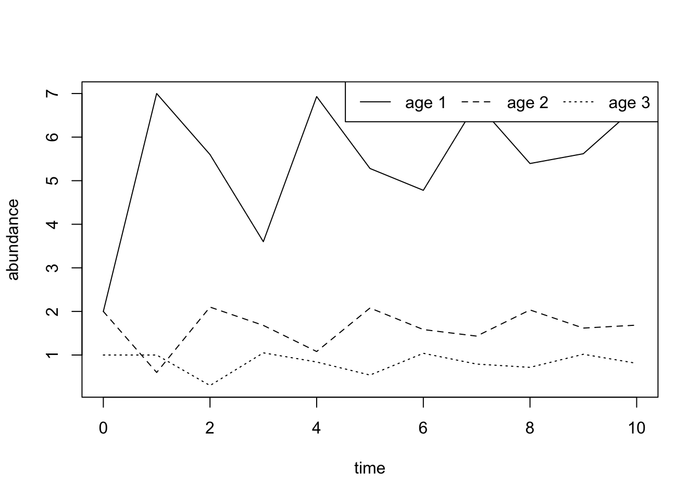
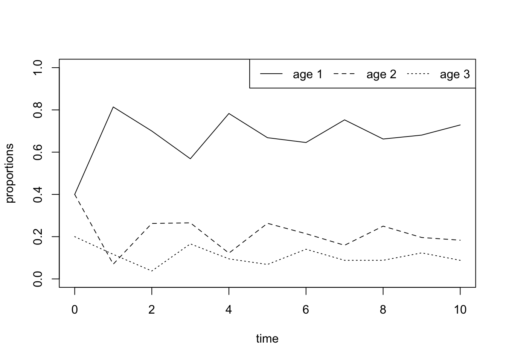
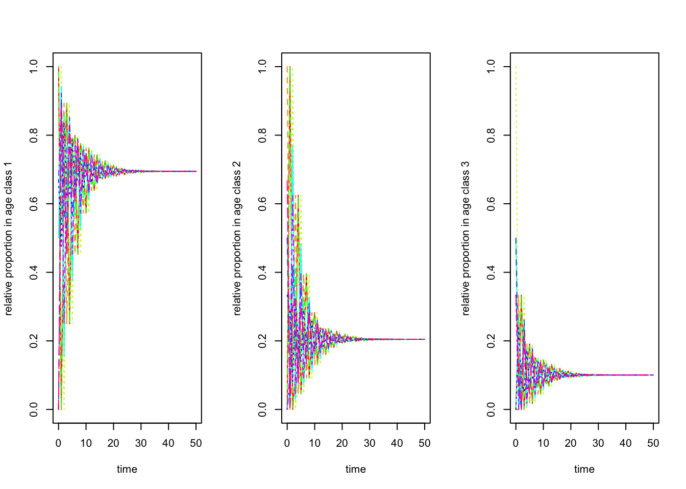

In the previous exercise, we found that the dynamics of an age-structured population is governed by a single number \(\lambda\) that desribes how fast the population grows from one time step to the next. More specifically, initially the densities in the different age classes can fluctuate but these flutuations disappear after some time (transient dynamics) and from then on the population - as a whole as well as the density in each class - grow by the same factor \(\lambda\) from one time step to the next. We also found that the value of \(\lambda\) does NOT depend on the intial population vector \(\mathbf N(0)\) but only on the population projection matrix \(\mathsf L\). This value of \(\lambda\) is known as the dominant eigenvalue of the matrix \(\mathsf L\).
In this R-exercise you will investigate how the proportions of individuals in the different age classes changes over time. One might for example wonder whether any of the age classes grows or shrinks faster than others and how the proportions of individuals in the different age classes depends on the initial population vector \(\mathbf N(0)\)? The propotion (or relative frequency) \(p_1(t)\) of indiviudals in age class 1 at time \(t\) is defined as
\[ p_1(t)=\frac{N_1(t)}{N_1(t)+N_2(t)+N_3(t)}=\frac{N_1(t)}{N_{\mathrm{tot}}(t)}. \] The propotions \(p_1(t)\) is the probability that a randomly sampled individual from the population belongs to age class 1. The proportions of individuals belonging to age class 2 and 3 are calculated analogously. Note that by definition at all times \(t\) the proportions add upp to 1, i.e.,
\[ p_1(t)+p_2(t)+p_3(t)=1. \]
To look into this question, let us use the same population projection matrix as in the previous exercise.
L <- matrix(
c(0, 1 , 5, 0.3, 0, 0, 0, 0.5, 0), # we construct a matrix by giving all its entries in a single vector, which we then split into...
nrow = 3, # ...this many rows and...
ncol = 3, # ...and this many columns
byrow = T) # fill matrix by rows
L # print the matrix## [,1] [,2] [,3]
## [1,] 0.0 1.0 5
## [2,] 0.3 0.0 0
## [3,] 0.0 0.5 0The following code produces a plot of the time series and is taken from the previous exercise.
length <-10 # length of the time series
N.0 <- c(2, 2, 1)
time.series <- matrix(N.0, nrow = 3) # creates a matrix with three rows, called times.series, in which we will store the time series
for (i in 1:length){# iterates the multiplication L.N(t) as often as specified by the parameter "length"
time.series <- cbind(time.series, L %*% time.series[,i]) # executes multiplication of the matrix L with current population vector and stores adds the result as a new column to the matrix time.series
}
matplot(0:length, t(time.series), type="l", lty=1:3, col = 1, ylab = "abundance", xlab = "time") # plots the time.series for each age-class
legend("topright", legend = c("age 1", "age 2", "age 3"), lty = 1:3, col = 1, bty = "N", horiz = TRUE) # adds a legend
The next step is to compute at each time \(t\) the proportions of the three age-classes based on the population vector (or \(p\)-state) \(\mathbf{N}(t)\). This can be done with the following code.
time.series.sum <- colSums(time.series) # vector of length t+1 with the summed abundances at each time step
time.series.prop1 <- time.series[1,]/time.series.sum # divides for each t the density of individuals at age 1 by total density at that time
time.series.prop2 <- time.series[2,]/time.series.sum # divides for each t the density of individuals at age 2 by total density at that time
time.series.prop3 <- time.series[3,]/time.series.sum # divides for each t the density of individuals at age 3 by total density at that time
matplot(0:length, time.series.prop1, type="l", lty=1, ylim = c(0,1), ylab = "proportions", xlab = "time") # plots proportions of individuals in age class 1 for the whole time series
lines(0:length, time.series.prop2, type="l", lty=2) # adds proportions for age class 2 to the same plot
lines(0:length, time.series.prop3, type="l", lty=3) # adds proportions for age class 3 to the same plot
legend("topright", legend = c("age 1", "age 2", "age 3"), lty = 1:3, col = 1, bty = "N", horiz = TRUE)
You can print the relative proportions in each age class at the end of the time series by writing:
time.series.prop1[length+1]
time.series.prop2[length+1]
time.series.prop3[length+1]Increase the length of the time series to \(length=40\). What do you conclude about how the proportion of individuals in the different age classes changes over time?
To answer this question, let us look at the time development of the proportions for ten different initial population vectors. Do this for times series of length \(length=50\).
length <- 50
N.0 <- c(c(1,0,0), c(0,1,0), c(0,0,1), c(2,0,0), c(1,1,0), c(1,0,1), c(0,1,1), c(2,1,0), c(2,0,1), c(0,2,1)) # vector containing ten different initial population vectors N(0)
ten.time.series <- matrix(0, nrow = 10*nrow(L), ncol = length+1) # matrix in which we will store ten time series simultaneously
ten.time.series[ ,1] <- N.0 # stores the initial population vectors in the first column of that matrix
for (i in 0:9){# this nested for-loop executes the calculations for the ten time series simultaneously
for (j in 1:length) {ten.time.series[(1+3*i):(3+3*i),(j+1)]<-L %*% ten.time.series[(1+3*i):(3+3*i),j]
}
}
sum.ten.time.series <- matrix(0, nrow = 10, ncol = length+1) # matrix storing the sum for the ten time series
for(i in 1:10){# computes the total population size at each time step for each of the ten time series
sum.ten.time.series[i, ] <- colSums(ten.time.series[(1+3*(i-1)):(3+3*(i-1)), ])
}
age1 <- c(1,4,7,10,13,16,19,22,25,28) # indices indicating the rows in which the first age class is stored
age2 <- c(2,5,8,11,14,17,20,23,26,29) # indices indicating the rows in which the second age class is stored
age3 <- c(3,6,9,12,15,18,21,24,27,30) # indices indicating the rows in which the third age class is stored
prop.age1 <- ten.time.series[age1, ]/sum.ten.time.series # computing the relative proportion of individuals in age class 1
prop.age2 <- ten.time.series[age2, ]/sum.ten.time.series # computing the relative proportion of individuals in age class 2
prop.age3 <- ten.time.series[age3, ]/sum.ten.time.series # computing the relative proportion of individuals in age class 3
par(mfrow = c(1,3)) # arranges the next three plots in a single figure
matplot(0:length, t(prop.age1), type="l", col = rainbow(10), ylab = "relative proportion in age class 1", xlab = "time") # plot of the relative proportions
matplot(0:length, t(prop.age2), type="l", col = rainbow(10), ylab = "relative proportion in age class 2", xlab = "time")
matplot(0:length, t(prop.age3), type="l", col = rainbow(10), ylab = "relative proportion in age class 3", xlab = "time")
We can print the values for the proportions at the end of the time series:
t(matrix(c(prop.age1[,length+1],prop.age2[,length+1],prop.age3[,length+1]), nrow = 10)) # produces a matrix that in each colum contains the final proportion for a different initial population vector N(0).Make yourself clear what these graphs show. What do you conclude from your results about the dynamics of the relative proportions of the three age-classes and their dependence on the initial population vector $N(0)?
Do the eventual relative proportions depend on the values in the population projection matrix \(\mathsf L\)? To investigate this question let us modify the above population projection matrix L. More specifically, please change \(s_1=0.3\) to \(s_1=0.25\) and determine the relative proportions in the different age-classes once the population does not fluctuate anymore.
Note that for later exercises you will have to be able to compute the stable age distribution for other matrices.